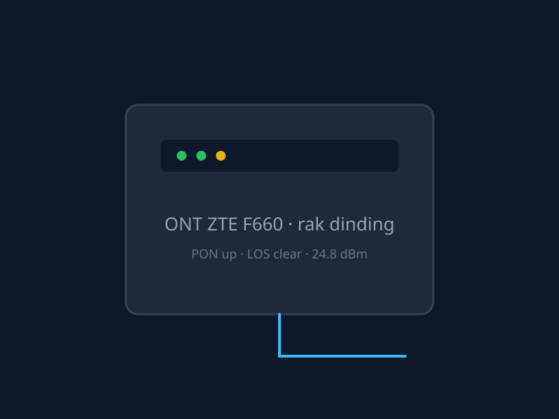
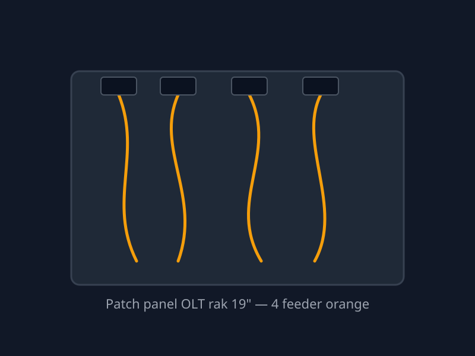
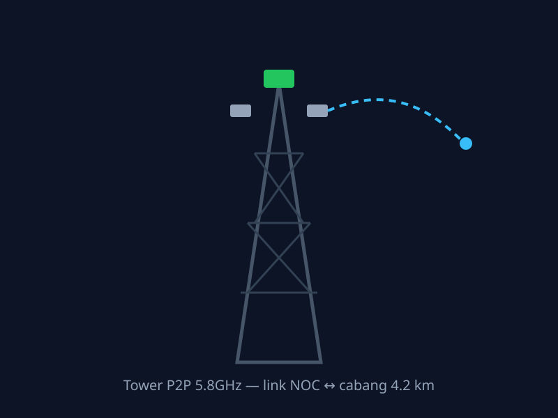

Design system standalone — CSS murni + vanilla JS, 100% lokal tanpa CDN. Author: AWGNET-RACING & AGENT AI TEAM
Body: utilisasi uplink ether1 mendekati 76% — pertimbangkan perluasan kapasitas.
812.4 Mbps
Ctrl + K · ifname: ether1-gre · deskripsi interface yang sangat panjang ini dipotong elipsis
Popover mengambang untuk konteks cepat — klik di luar untuk menutup.
| Node | Interface | Utilisasi | Status | |
|---|---|---|---|---|
C1core-rtr-01 | ether1 | 76% | High | |
O1olt-c320-01 | pon0/1:1 | 62% | OK | |
P9p2p-tower-09 | wlan1 | — | Down 14m | |
| 3 node | 66% rata2 | |||
| Node | Tipe | Lokasi | Utilisasi | Status |
|---|---|---|---|---|
| core-rtr-01 | Mikrotik CCR | NOC Pusat | 76% | High |
| bras-pppoe-01 | Mikrotik CCR2 | NOC Pusat | 58% | OK |
| olt-c320-01 | ZTE C320 | Solo | 62% | OK |
| olt-c300-02 | ZTE C300 | Yogya | 44% | OK |
| p2p-tower-09 | Ubiquiti Rocket | Boyolali | 0% | Down |
| p2p-tower-11 | Mikrotik rb912 | Klaten | 31% | OK |
| sw-agg-yogya | Cisco 2960 | Yogya | 22% | OK |
| brg-solo-02 | Mikrotik hEX | Solo | 12% | Idle |
| radius-01 | Ubuntu / FreeRADIUS | NOC Pusat | 48% | OK |
| monitoring-01 | Zabbix VM | NOC Pusat | 81% | High |
| olt-c320-02 | ZTE C320 | Semarang | 55% | OK |
| p2p-tower-03 | Ubiquiti LiteAP | Magelang | 27% | OK |
| edge-sw-mgl | Tp-link L2 | Magelang | 9% | OK |
| backup-gw-01 | Mikrotik 4011 | NOC Pusat | 4% | Standby |
centang kiri…


